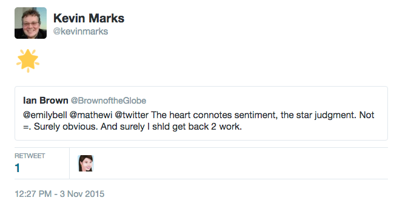

Not in our Stars
Brief summary for tweet length attention spans
 We can get back the much-mourned favorite star on twitter by an 'add a comment' retweet with a 🌟 emoji eg:
We can get back the much-mourned favorite star on twitter by an 'add a comment' retweet with a 🌟 emoji eg:
— Kevin Marks (@kevinmarks) November 4, 2015
executive summary in bullet form
This has the following advantages:- Lets you use star again, or any other emoji that better expresses nuance.
- Notifies the person starred, just as 'like' does
- shows up in your feed (but not in your favorites list)
- works in all twitter clients as it shows the emoji and link by default, and the linked-to tweet in official ones
- can be liked and retweeted in its own right
- is not counted as a like or a retweet (this is true for all quoted tweets)
- is a bit more obtrusive than the old favorite
- takes more than one click to create
Historical exegesis and discussion of semiotics
Back in the dawn of twitter, new ways of using it were created by users, sporadically adopted, and then reified first by the vibrant client ecosystem, and eventually by official Twitter clients. Hashtags, @ replies and retweets started this way, as microsyntax or picoformats. Favorites were added early on and had a favstar-like top ten list with the lovely url slug 'favourings'. Your favorites were always public, and obviously so (unlike Google reader's which scared users). But when they caused notifications and showed up in timelines as actions, people were disconcerted.The very opacity of the star meant that people could imbue it with its own meaning, and the nuances of what faving meant have been long-discussed - see Jessica Roy in Time for an example. Hence the immense hand-wringing over Twitter's change from star to heart and favorite to like. Perhaps they were led by AirBnB's 30% engagement boost when they made the change? The difference is one of semiotics though - when you apply a heart to a place to stay that is clearer than applying it to a tweet; it may still be a nuanced note on the host, or ironic, but the layers of meaning are more limited than in a tweet. With a tweet there are many more possible signifiers you may be indicating favour or attention to. Who saying it, who's @-tagged, hashtags, links, embedded media, the threads extending before or after, can all be grist for that little pointer.
However, there is another user-driven pattern that Twitter has not paid much attention to - emoji as replies. If you look through emojitracker there are nearly a billion uses of the 😂 emoji and over a billion of the various hearts. This is a way people use to express the missing nuance that a single system-chosen glyph doesn't convey. Now you can reply to people with this directly, but that doesn't have the right effect; it is directly responding to the person, not the tweet, and relying on twitter threading to handle it.
Twitter's new 'quote tweet' option, hidden under the retweet button, gives a better way:
— Kevin Marks (@kevinmarks) November 3, 2015
Shown in twitter with the quoted tweet inlined:

Shown in classic clients as a star and a link. This is a public post, clear in intent, and directed at the tweet with its associated media and nuance, just as a favorite was.
There is more flexibility here - repeated emoji; multiple emoji
☑ ✅ 💯 https://t.co/GRBaxlsKHB
— Kevin Marks (@kevinmarks) November 4, 2015@zeynep Maybe Twitter should add a checkmark -- ✔-- to signal things like "noted" and "save for later" etc. Keep the heart for "likes" etc.
— Dan Gillmor (@dangillmor) November 3, 2015In fact, had twitter thought this through they could have saved time on the disappointing new "polls" feature by emulating Slack's 'reacji' voting instead.
In the meantime, join me and the billions of other emoji tweeters in using a star reply to indicate your favourings.